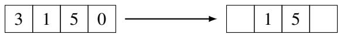
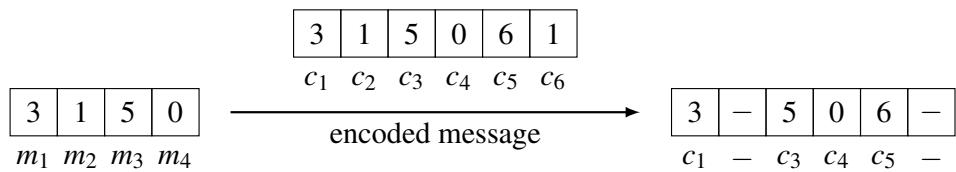
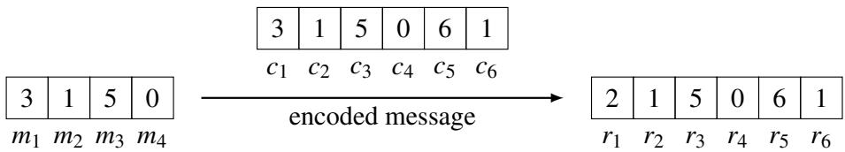
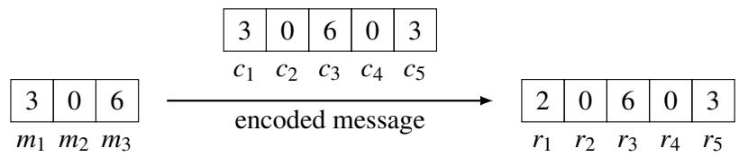

009 - 纠错码
1 纠错码
在本讲义中，我们将讨论通过不可靠的通信信道传输消息的问题。信道可能导致消息的某些部分（“数据包”，packets）丢失或丢弃；或者更严重的是，它可能导致某些数据包被损坏。我们将学习如何通过在消息中引入冗余来对其进行“编码”，以防止这两种类型的错误。这种编码方案被称为“纠错码”（error-correcting code）。纠错码是数学、计算机科学和电气工程领域的主要研究对象；它们属于一个被称为“信息论”（Information Theory）的领域，这是核心计算机科学之一。除了支持它们的优美理论（我们将在本讲义中略见一斑）之外，它们还具有巨大的实际重要性：每当你使用手机、卫星电视、DSP、电缆调制解调器、硬盘驱动器、CD-ROM、DVD 播放器等，或者在互联网上发送和接收数据时，你都在使用纠错码来确保信息被可靠地传输。纠错码还用于数据中心以及加速并行计算。
粗略地说，纠错码有两种不同的风格：一种是基于有限域上的多项式的代数码（algebraic codes），另一种是基于图论的组合码（combinatorial codes）。在本讲义中，我们将把重点放在代数码上，特别是所谓的 Reed-Solomon 码（以其两位发明者的名字命名）。在这样做的过程中，我们将充分利用我们在上一讲中学习到的多项式性质。
1.1 擦除错误
我们将考虑在不可靠信道上传输信息的两种情况。第一种情况以互联网为例，信息（例如一个文件）被分解成多个数据包，其不可靠性体现在一些数据包在传输过程中丢失，如下图所示：

我们将此类错误称为擦除错误（erasure errors）。假设消息由 \(n\) 个数据包组成，并且假设在传输过程中最多丢失 \(k\) 个数据包。我们将展示如何将由 \(n\) 个数据包组成的初始消息编码为由 \(n + k\) 个数据包组成的冗余编码，以便接收者可以从任何收到的 \(n\) 个数据包中重构出原始消息。请注意，在这种设置下，数据包都带有标题标签，因此接收者确切地知道哪些数据包在传输过程中被丢弃了。
我们可以不失一般性地假设每个数据包的内容都是一个模 \(q\) 的数字，其中 \(q\) 是一个素数。例如，数据包的内容可能是一个 32 位的字符串，因此可以被视为一个介于 0 和 \(2^{32} - 1\) 之间的数字；那么我们可以选择 \(q\) 为任何大于 \(2^{32}\) 的素数。\(\mathrm{GF}(q)\) 上的多项式性质（即系数和值均模 \(q\) 约简）非常适合解决这个问题，并且是这种纠错方案的支柱。
为了看清这一点，让我们用 \(m_1, \dots, m_n\) 来表示要发送的消息，其中每个 \(m_i\) 都是 \(\mathrm{GF}(q)\) 中的一个数字，并做出以下关键观察：
- 存在唯一的 \(n - 1\) 次多项式 \(P(x)\)，使得对于 \(1 \leq i \leq n\)，有 \(P(i) = m_i\)。（即 \(P(x)\) 包含了关于消息的所有信息，并且对 \(P(i)\) 求值可以得到第 \(i\) 个数据包的预期内容）。
- 现在要发送的消息是 \(m_1 = P(1), \dots, m_n = P(n)\)。我们可以通过在点 \(n + j\) 处对 \(P(x)\) 求值来生成额外的数据包。（回想一下，我们传输的码字应该是冗余的，即它应该包含比原始消息更多的数据包，以弥补丢失的数据包。这就是码字（codeword）与消息（message）之间的区别。码字是传输的内容，且通过构造具有冗余性；而消息是用户给我们的东西，不一定包含任何冗余。）因此，传输的码字是 \(c_1 = P(1), c_2 = P(2), \dots, c_{n+k} = P(n+k)\)。由于我们是模 \(q\) 运算，我们必须确保 \(n + k \leq q\)，但由于假设 \(q\) 非常大，这个条件并不会构成严重的限制。
- 我们可以从 \(P(x)\) 在任何 \(n\) 个互不相同的点处的值中唯一地重构出它，因为它具有 \(n - 1\) 次幂。这意味着可以从任何 \(n\) 个传输的数据包（而不仅仅是原始的 \(n\) 个数据包！）中重构出 \(P(x)\)。一旦我们重构出了多项式 \(P\)，我们就可以在 \(x = 1, \dots, n\) 处对 \(P(x)\) 求值，以恢复原始消息 \(m_1, \dots, m_n\)。
示例
假设 Alice 想要给 Bob 发送一个包含 \(n = 4\) 个数据包的消息，并且她想要防范 \(k = 2\) 个数据包丢失。那么，假设数据包可以被编码为 0 到 6 之间的整数，Alice 可以在 GF(7) 上工作（因为 \(7 \geq n + k = 6\)；当然，在实际应用中，我们会在更大的域上工作！）。假设 Alice 想要发送给 Bob 的消息是 \(m_1 = 3, m_2 = 1, m_3 = 5, m_4 = 0\)。由这 4 个点描述的唯一的 \(n - 1 = 3\) 次多项式是 \(P(x) = x^3 + 4x^2 + 5\)。
练习。我们使用模 7 的拉格朗日插值导出了这个多项式。请核实这一推导，并验证对于 \(1 \leq i \leq 4\)，确实有 \(P(i) = m_i\)。
由于 \(k = 2\)，Alice 必须在 2 个额外的点上对 \(P(x)\) 求值：\(P(5) = 6\) 和 \(P(6) = 1\)。现在，Alice 可以传输由 \(n + k = 6\) 个数据包组成的码字，其中对于 \(1 \leq j \leq 6\)，\(c_j = P(j)\)。因此 Alice 将发送 \(c_1 = P(1) = 3, c_2 = P(2) = 1, c_3 = P(3) = 5, c_4 = P(4) = 0, c_5 = P(5) = 6, c_6 = P(6) = 1\)。
现在假设数据包 2 和 6 丢失了，在这种情况下我们的处境如下：

根据 Bob 收到的值（3, 5, 0 和 6），他使用拉格朗日插值法计算以下基多项式（其中所有内容都应解释为模 7）：
（注意，我们这里利用了 -24, 4, -3 和 8 (模 7) 的逆元分别是 2, 2, 2 和 1 这一事实。）然后他重构出多项式 \(P(x) = 3 \cdot \Delta_1(x) + 5 \cdot \Delta_3(x) + 0 \cdot \Delta_4(x) + 6 \cdot \Delta_5(x) = x^3 + 4x^2 + 5 \pmod{7}\)。Bob 然后计算 \(m_2 = P(2) = 1\)，这是原始码字中丢失的数据包。更一般地，无论哪两个数据包丢失，遵循完全相同的方法，Bob 总能重构出 \(P(x)\)，从而重构出原始的基础消息。
练习。检查 Bob 上述的计算过程，并验证他是否真的如所声称的那样重构出了正确的多项式。记住所有的算术运算都必须模 7 进行。
因此，这种纠错方案是理论最优的：它可以从任何收到的 \(n\) 个字符中恢复传输消息的 \(n\) 个字符，但从任何更少数量的字符进行恢复都是不可能的。
1.2 重温多项式插值
让我们简要偏离一下主题，讨论另一种多项式插值方法（不同于上一讲中讨论的拉格朗日插值），该方法在处理一般错误时将非常有用。我们需要让这里的底层线性代数更加显式化，以便我们能在今后的学习中更好地依靠它。
同样，算法的目标是输入 \(d + 1\) 个点对 \((x_1, y_1), \dots, (x_{d+1}, y_{d+1})\)，并输出多项式 \(p(x) = a_d x^d + \dots + a_1 x + a_0\)，使得对于 \(i = 1\) 到 \(d+1\)，有 \(p(x_i) = y_i\)。
算法的第一步是写出一个由 \(d + 1\) 个变量组成的包含 \(d + 1\) 条线性方程的方程组：变量是多项式的系数 \(a_0, \dots, a_d\)均衡。每条方程是通过将 \(x\) 固定为 \(d + 1\) 个值 \(x_1, \dots, x_{d+1}\) 中的一个而得到的。请注意，在 \(p(x)\) 中，\(x\) 是一个变量，而 \(a_0, \dots, a_d\) 是固定的常数。在下面的方程组中，这些角色被互换了：\(x_i\) 是固定的常数，而 \(a_0, \dots, a_d\) 是变量。例如，第 \(i\) 条方程是固定 \(x\) 为 \(x_i\)，并令多项式的值为 \(y_i\) 的结果：\(a_d x_i^d + a_{d-1} x_i^{d-1} + \dots + a_0 = y_i\)。
现在求解这些方程就能得到多项式 \(p(x)\) 的系数。例如，假设给定三对点 \((-1, 2), (0, 1)\) 和 \((2, 5)\)；我们的目标是构造出通过这些点的 2 次多项式 \(p(x)\)。第一条方程说明 \(a_2 (-1)^2 + a_1 (-1) + a_0 = 2\)。化简后得到 \(a_2 - a_1 + a_0 = 2\)。类似地，第二条方程说明 \(a_2 (0)^2 + a_1 (0) + a_0 = 1\)，即 \(a_0 = 1\)。而第三条方程说明 \(a_2 (2)^2 + a_1 (2) + a_0 = 5\)。因此我们得到以下方程组：
代入 \(a_0\) 并将第一条方程乘以 2 得到：
然后将这两条方程相加，我们发现 \(6a_2 = 6\)，所以 \(a_2 = 1\)，再代回可以发现 \(a_1 = 0\)。因此，我们确定了多项式 \(p(x) = x^2 + 1\)。为了更仔细地证明这种方法的合理性，我们必须证明此类方程组总是有解，并且该解是唯一的。幸运的是，我们上一讲中通过拉格朗日插值所做的工作已经确立了这一点。（你能看出来为什么吗？）这就是能够从不同角度看待同一个问题的优点之一。
1.3 一般错误
现在让我们回到纠错的主题，考虑一个更具挑战性的场景。假设 Alice 希望通过嘈杂的信道（例如通过调制解调器）与 Bob 通信。她的消息是 \(m_1, \dots, m_n\)，我们可以将 \(m_i\) 视为字符（字节或是英文字母表中的字符）。现在的问题是，由于信道噪声，有些字符在传输过程中被损坏了。因此 Bob 收到的字符数量与 Alice 发送的一样多，但其中 \(k\) 个被损坏了，且 Bob 完全不知道是哪 \(k\) 个！你可以把这些看成是被恶意对手破坏的，该对手唯一的限制是能破坏的字符不超过 \(k\) 个。从这种一般错误中恢复要比从擦除错误中恢复具有挑战性得多，尽管多项式再次成为了其中的关键。正如我们将看到的，Alice 仍然可以防范 \(k\) 个一般错误，代价是仅多传输 \(2k\) 个额外字符（是我们在上面看到的擦除情况下的两倍）。
我们将再次把每个字符视为模某个素数 \(q\) 的数字。（对于英文字母表来说，\(q\) 是某个大于 26 的素数。）和以前一样，我们可以用 \(\mathrm{GF}(q)\) 上的 \(n - 1\) 次多项式 \(P(x)\) 来描述消息，使得 \(P(1) = m_1, \dots, P(n) = m_n\)。同样，为了应对错误，Alice 将通过在额外的点上对 \(P(x)\) 求值来传输额外的字符。如前所述，为了抵御 \(k\) 个一般错误，Alice 必须发送 \(2k\) 个额外字符：因此编码后的码字为 \(c_1, \dots, c_{n+2k}\)，其中对于 \(1 \leq j \leq n+2k\)，\(c_j = P(j)\)，我们可以假设 Bob 收到的这些字符中（至少）有 \(n+k\) 个是未损坏的。和以前一样，我们必须对 \(q\) 施加温和的约束，使其足够大以满足 \(q > n + 2k\)。
例如，如果 Alice 想要通过调制解调器向 Bob 发送 \(n = 4\) 个字符，且其中最多有 \(k = 1\) 个字符被损坏，她必须冗余地发送由 6 个字符组成的编码消息。假设她想要传输与上述擦除示例中相同的消息 (3150)，且 \(c_1\) 从 3 损坏为 2。这种情况可以由下图直观展现：

从 Bob 的角度来看，重构 Alice 的消息的问题等同于根据收到的 \(n + 2k\) 个字符 \(r_1, r_2, \dots, r_{n+2k}\) 来重构多项式 \(P(x)\)。换句话说，Bob 被给定了 \(n + 2k\) 个模 \(q\) 的值 \(r_1, r_2, \dots, r_{n+2k}\)，并保证存在一个 \(\mathrm{GF}(q)\) 上的 \(n - 1\) 次多项式 \(P(x)\)，使得对于 \(1\) 到 \(n + 2k\) 之间的 \(n + k\) 个 \(i\) 值，有 \(P(i) = r_i\)。Bob 必须从这些数据中重构出 \(P(x)\)（在上述示例中，\(n + k = 5\)，且 \(r_2 = P(2) = 1, r_3 = P(3) = 5, r_4 = P(4) = 0, r_5 = P(5) = 6, r_6 = P(6) = 1\)）。然而请注意，Bob 并不知道哪 \(n + k\) 个值是正确的！
Bob 甚至拥有足够的信息来重构 \(P(x)\) 吗？我们的第一个观察是，最多只存在一个次数最多为 \(n - 1\) 的多项式 \(P(x)\)，满足在 1 到 \(n + 2k\) 之间的至少 \(n + k\) 个 \(i\) 值上有 \(P(i) = r_i\)。为了看清这一点，假设对于 \(n + k\) 个点有 \(P(i) = r_i\)，且对于 \(n + k\) 个（可能不同）点有 \(P'(i) = r_i\)。由于总共只有 \(n + 2k\) 个点，这两组点必然在 \(n\) 个点上重叠，因此对于这 \(n\) 个点有 \(P(i) = r_i = P'(i)\)，这意味着它们必须是相同的 \(n - 1\) 次多项式。此外，我们观察到原始多项式在 \(n + k\) 个点上满足 \(P(i) = r_i\)，因为最多有 \(k\) 个错误。因此，\(P(x)\) 是唯一与 Bob 的信息一致的多项式。
总结一下，Bob 的任务是找到一个 \(n - 1\) 次多项式 \(P(x)\)，使得对于至少 \(n + k\) 个 \(i\) 值，有 \(P(i) = r_i\)。如果他能做到这一点， he can be sure that the polynomial he has found is in fact the original polynomial \(P(x)\).
但是 Bob 怎样才能高效地找到这样的多项式呢？手头的问题是 \(k\) 个错误的位置。令 \(e_1, \dots, e_k\) 为发生错误的 \(k\) 个位置（使得对于所有 \(i \notin \{e_1, \dots, e_k\}\)，有 \(P(i) = r_i\)）。Bob 不知道这些错误在哪里，所以他不知道 \(e_1, \dots, e_k\) 的值。
现在 Bob 可以尝试猜测 \(k\) 个错误的位置，但这太费时间了（实际上这需要指数级的时间）。相反，Bob 将采用一个基于以下定义的巧妙技巧。考虑所谓的错误定位多项式 (error-locator polynomial)：
请注意 \(E(x)\) 是一个 \(k\) 次多项式（因为 \(x\) 出现了 \(k\) 次）。还请注意 Bob 并不显式地知道这个多项式，因为他不知道错误的位置 \(e_i\)。然而，他将符号化地使用该多项式，并最终计算出其中出现的 \(e_i\) 值！
让我们对这个多项式做一个简单但至关重要的观察：
为了看清这一点，请注意，在未发生错误的点 \(i\) 上，由于在这些点上有 \(P(i) = r_i\)，因此等式成立；而在发生错误的点 \(i\) 上，由于此时 \(E(i) = 0\)，等式显然也成立。
这一观察构成了 Berlekamp 和 Welch 发明的一种非常聪明算法的基础。更仔细地查看 (1) 中的等式，我们将展示它们可以对应于 \(n + 2k\) 个变量组成的 \(n + 2k\) 条线性方程，从中可以很容易地推导出错误的位置和 \(P(x)\) 的系数（类似于我们在上一节中看到的插值方案）。
定义多项式 \(Q(x) := P(x)E(x)\)，它的次数为 \(n + k - 1\)，因此由 \(n + k\) 个系数 \(a_0, a_1, \dots, a_{n+k-1}\) 描述。错误定位多项式 \(E(x) = (x - e_1) \dots (x - e_k)\) 的次数为 \(k\)，由 \(k + 1\) 个系数 \(b_0, b_1, \dots, b_k\) 来描述，但最高位系数（\(x^k\) 的系数 \(b_k\)）始终为 1。因此我们可以写成：
（记住我们还不知道任何系数 \(a_i\) 或 \(b_i\)。）
现在注意到，将 \(Q(x) = P(x)E(x)\) 代入 (1)，我们得到 \(n + 2k\) 条方程：
使用 \(Q(x)\) 和 \(E(x)\) 的系数写出第 \(i\) 条方程，得到：
这是一组 \(n + 2k\) 条线性方程，对应于 \(i\) 的每个值，含有 \(n + 2k\) 个未知数 \(a_0, a_1, \dots, a_{n+k-1}, b_0, b_1, \dots, b_{k-1}\)。我们可以解这个线性方程组并得到 \(E(x)\) 和 \(Q(x)\)。然后我们可以计算比例 \(\frac{Q(x)}{E(x)}\) 来获得 \(P(x)\)。通过示例可以最好地说明这一点。
示例。假设我们正在 \(\mathrm{GF}(7)\) 上工作，Alice 想要通过调制解调器向 Bob 发送 \(n = 3\) 个字符“3”，“0”和“6”。类比于英文字母表，这相当于只使用字母表的前 7 个字母，其中 \(a=0, \dots, g=6\)。所以 Alice 希望 Bob 接收到的消息是“dag”。然后 Alice 进行插值（例如，使用拉格朗日：练习！）找到多项式
这是唯一的 \(\mathrm{GF}(7)\) 上的 2 次多项式，满足 \(P(1) = 3, P(2) = 0, P(3) = 6\)。
假设 Alice 知道最多可能有 \(k = 1\) 个字符被损坏；那么她需要向 Bob 传输 \(n + 2k = 5\) 个字符 \(P(1) = 3, P(2) = 0, P(3) = 6, P(4) = 0, P(5) = 3\)。假设 \(P(1)\) 实际上被损坏了，Bob 收到的字符是 2 而不是 3（即 Alice 发送了编码后的码字“dagad”，但 Bob 收到的却是“cagad”）。综上所述，我们的情况如下：

令 \(E(x) = (x - e_1) = x + b_0\) 为错误定位多项式——记住，Bob 还不知道 \(e_1 = -b_0\) 是多少，因为他不知道错误发生在哪里——并令 \(Q(x) = a_3 x^3 + a_2 x^2 + a_1 x + a_0\)（这里的系数 \(a_i\) 同样是未知的）。现在 Bob 只需要将 \(i = 1, i = 2, \dots, i = 5\) 代入上述 (1) 中的方程 \(Q(i) = r_i E(i)\)，并进行化简，得到含五个未知数的五条线性方程（请记住我们是在模 7 下运算，且 \(r_i\) 是 Bob 收到的第 \(i\) 个字符的值）：
Bob 然后解这个线性方程组，发现 \(a_3 = 1, a_2 = 0, a_1 = 0, a_0 = 6\) 且 \(b_0 = 6\)（均模 7）。这给了他多项式 \(Q(x) = x^3 + 6\) 和 \(E(x) = x + 6 = x - 1\)。（作为检查，\(E(x) = x - 1\) 意味着错误的位置在 \(e_1 = 1\)，这是正确的，因为第一个字符从“d”损坏为了“c”。）然后他可以通过计算商来求得 \(P(x)\)：
Bob 注意到第一个字符被损坏了（因为 \(e_1 = 1\)），所以既然他已经有了 \(P(x)\)，他只需要计算 \(P(1) = 3 = \mathrm{'d'}\)，就得到了原始的、未损坏的消息“dag”。
练习。通过 \(i = \{1, 2, 3, 4, 5\}\) 的等式 \(Q(i) = r_i E(i)\) 验证上述方程组的推导过程。此外，解这些方程（这有点乏味，但不难！）并检查你的解是否与上面的结果一致。记住所有的算术运算都应模 7 进行。
练习。针对第二个字符从“0”损坏为“5”且所有其他字符未损坏的情况，重新做一遍上述示例。
细节讨论
有两点需要进一步讨论。我们如何知道这 \(n + 2k\) 条方程是相容的？如果它们没有解怎么办？这很简单。这些方程一定是相容的，因为由 \(Q(x) = P(x)E(x)\) 以及实际的错误定位多项式 \(E(x)\) 构成了一组解！
一个更有趣的问题是：我们如何知道这 \(n + 2k\) 条方程是独立的，也就是说，我们如何知道除了我们要寻找的真实解之外，不存在其他虚假的解？用更数学的话来说，假设我们构造的解是 \(Q'(x), E'(x)\)；我们如何知道这个解满足 \(E'(x)\) 整除 \(Q'(x)\) 且 \(\frac{Q'(x)}{E'(x)} = \frac{Q(x)}{E(x)} = P(x)\)？
为了看清这是真的，我们首先注意到，根据我们计算 \(Q'(x), E'(x)\) 的方法，我们知道对于 \(1 \leq i \leq n + 2k\)，有 \(Q'(i) = r_i E'(i)\)；当然，根据定义，对于相同的 \(i\) 值，我们也有 \(Q(i) = r_i E(i)\)。将第一个等式乘以 \(E(i)\)，第二个等式乘以 \(E'(i)\)，我们得到
因为两边都等于 \(r_i E(i)E'(i)\)。方程 (2) 告诉我们，两个多项式 \(Q(x)E'(x)\) 和 \(Q'(x)E(x)\) 在 \(n + 2k\) 个点上相等。但是这两个多项式的次数均为 \(n + 2k - 1\)，因此它们完全由在 \(n + 2k\) 个点上的值确定。因此，由于它们在 \(n + 2k\) 个点上一致，它们必须是同一个多项式，即对于所有 \(x\)，都有 \(Q(x)E'(x) = Q'(x)E(x)\)。现在我们可以除以多项式 \(E(x)E'(x)\)（根据构造，它不是零多项式）得到 \(\frac{Q'(x)}{E'(x)} = \frac{Q(x)}{E(x)} = P(x)\)，这正是我们想要的结果。因此，我们可以确信我们找到的任何解都是正确的。
练习（较难）。解 \(Q'(x), E'(x)\) 总是唯一的吗？上述分析告诉我们，其比例必须始终满足 \(\frac{Q'(x)}{E'(x)} = \frac{Q(x)}{E(x)} = P(x)\)，但并不能保证 \(Q'(x) = Q(x)\) 且 \(E'(x) = E(x)\)。提示：在我们的上述示例中，如果实际上没有字符被损坏（尽管 Alice 仍然假设可能有 \(k=1\) 个字符被损坏），会发生什么？试着在这种情况下写出并求解方程组。你应该会得到一整簇解，对应于 \(b_0 \in \mathrm{GF}(7)\) 的每个可能值。（因为在这种情况下没有错误，所以 \(b_0\) 是不确定的。）其他值可以用 \(b_0\) 来表示：\(a_3 = 1, a_2 = 1+b_0, a_1 = 1+b_0, a_0 = b_0\)。但是，无论 \(b_0\) 的值是多少，其商均为 \(\frac{Q(x)}{E(x)} = \frac{x^3 + (1 + b_0)x^2 + (1 + b_0)x + b_0}{x + b_0} = x^2 + x + 1\)，因此我们再次恢复了 \(P(x)\)（正如我们根据前一段的论证所知道的那样）。